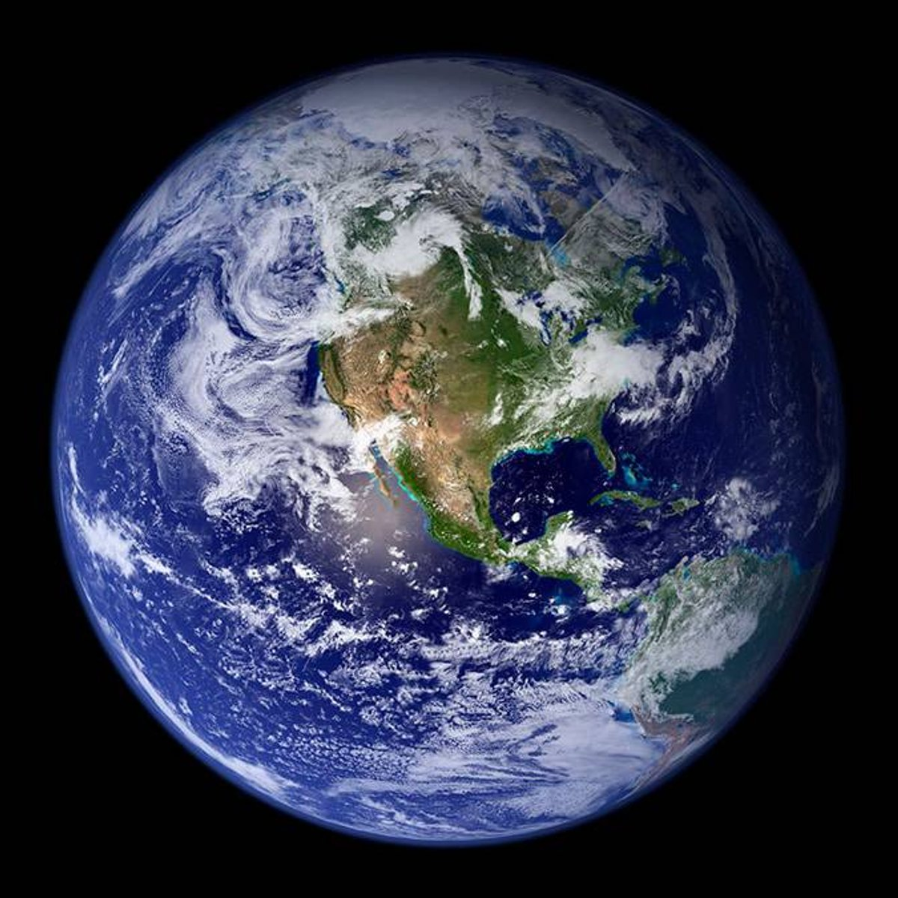
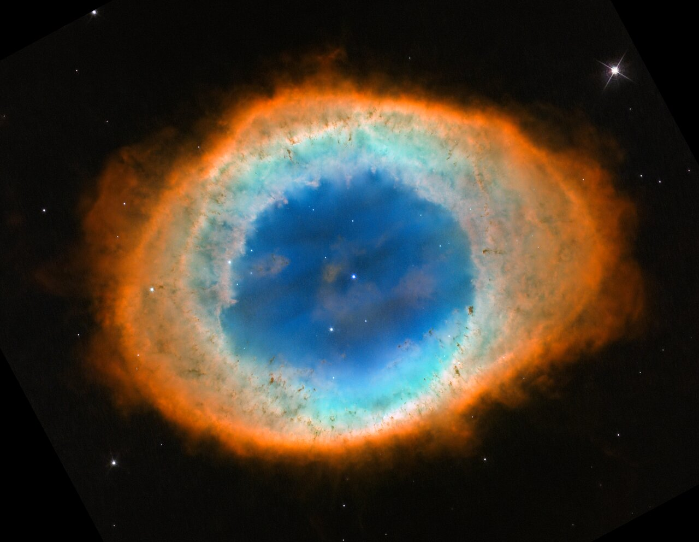

Home
Bem-vindo ao site da NASA!
que tal explorar um pouco a capacidade humana?? aprender sobre aquele incrivel e gigante universo!
Novidades
Fique por dentro das últimas descobertas e missões da NASA. Atualmente, estamos focados em várias iniciativas, incluindo a exploração de Marte com o rover Perseverance, que está buscando sinais de vida passada.

A NASA também está expandindo sua presença na Lua com o programa Artemis, que visa levar a próxima geração de astronautas, incluindo a primeira mulher e a próxima homem, à superfície lunar até 2024.

Além disso, lançamos o telescópio espacial James Webb, que nos fornece imagens sem precedentes do universo. Ele nos ajudará a entender a formação de estrelas, galáxias e até mesmo sistemas planetários.
Espaço

O espaço é um lugar de beleza e mistério. A NASA tem várias missões para explorar não apenas o nosso sistema solar, mas também além dele. Cada missão é uma jornada em busca de respostas para perguntas fundamentais sobre o universo.
Desde a Voyager, que está agora na borda do sistema solar, até as missões de retorno de amostras de asteroides, estamos constantemente aprendendo mais sobre a formação e evolução do nosso cosmos.
Em breve, planejamos enviar a missão Europa Clipper para estudar a lua Europa de Júpiter, onde acreditamos que possa existir um oceano sob sua superfície, potencialmente habitável.
Clima e Terra

A compreensão do clima da Terra é fundamental para a sobrevivência do nosso planeta. A NASA utiliza uma série de satélites e ferramentas de pesquisa para monitorar o clima, os padrões climáticos e as mudanças ambientais.
Estudamos fenômenos como furacões, secas e as mudanças nos padrões de temperatura e umidade. Com esses dados, conseguimos prever desastres naturais e mitigar seus impactos.
Além disso, nossas pesquisas sobre as mudanças climáticas ajudam a informar políticas e decisões que impactam o futuro do nosso planeta e das gerações futuras.
Sobre a NASA

A NASA (Administração Nacional da Aeronáutica e Espaço) é uma das principais organizações de exploração espacial do mundo. Desde sua fundação em 1958, temos sido pioneiros em tecnologia espacial, ciência e pesquisa.
A NASA é uma agência do governo dos EUA dedicada à exploração espacial e pesquisa científica. Desde sua criação, temos sido responsáveis por marcos históricos, como a missão Apollo 11, que levou o homem à Lua.
Com uma equipe de cientistas, engenheiros e pesquisadores, a NASA trabalha incansavelmente para expandir nosso conhecimento do universo e aplicar esse conhecimento para melhorar a vida na Terra.
Hoje, estamos envolvidos em uma variedade de projetos, desde a exploração de Marte até a busca por exoplanetas. Nosso objetivo é inspirar e educar as próximas gerações sobre a ciência e a exploração do espaço.
Contato

QUER CONVERSAR COM A GENTE JOVEM EXPLORADOR?!? abaixo tem nosso contato: